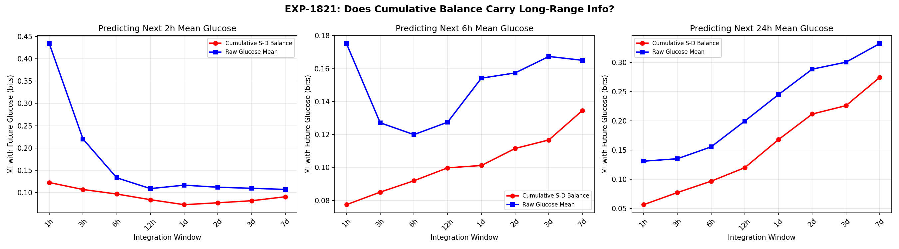
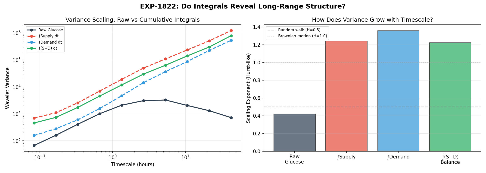
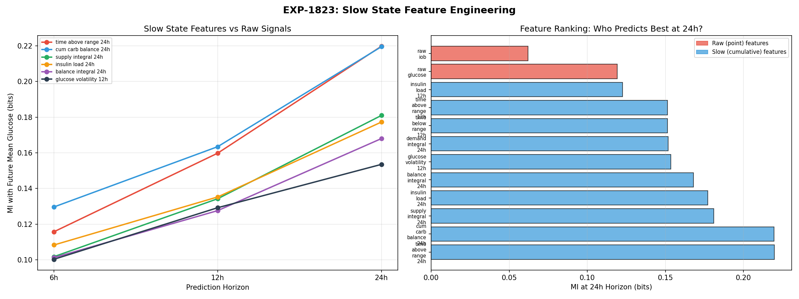
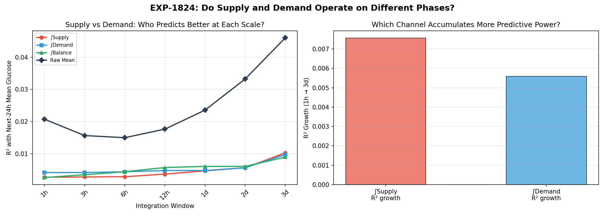
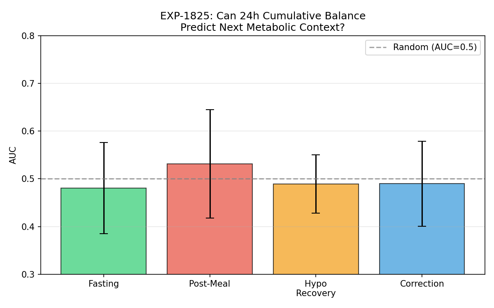
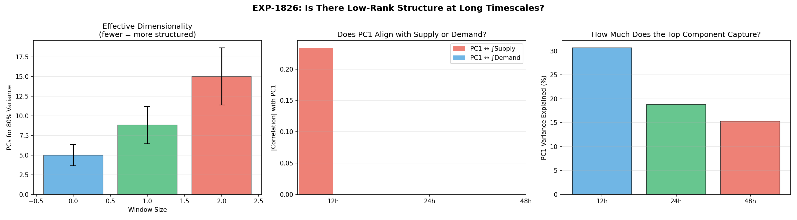

Cumulative Integrals & Slow State Detection¶
Record
Record as of 2026-04-10. A point-in-time document; it is not kept up to date.
Experiments: EXP-1821 through EXP-1826
Date: 2026-04-10
Status: Draft (AI-generated from data-first analysis)
Population: 11 AID patients, ~180-day CGM windows
Executive Summary¶
This report investigates whether cumulative integrals of supply and demand reveal slow metabolic state information (glycogen stores, insulin sensitivity drift) that is invisible in raw signals. The user hypothesized that "low rank, high dimensionality is more observable in cumulative differences in integrals."
Key findings:
- Engineered slow features beat raw signals for 24h prediction (EXP-1823): time-above-range (0.220 bits) and cumulative carb balance (0.220 bits) carry nearly 2× the 24h predictive information of raw glucose (0.119 bits)
- Integrals scale differently than raw signals (EXP-1822): demand integral has a higher Hurst exponent (H=1.36) than supply (H=1.24), confirming different long-range accumulation dynamics
- But raw cumulative balance itself is uninformative (EXP-1825): AUC ≈ 0.50 for predicting metabolic context from 24h balance
- No phase separation between supply and demand (EXP-1824): both integrals grow R² similarly from 1h→3d
- No low-rank structure at long windows (EXP-1826): dimensionality scales linearly with window size (5 PCs at 12h → 15 PCs at 48h)
Bottom line: The slow state information IS there, but only extractable through carefully engineered features (time-in-range, insulin load, volatility), not through raw integration of supply/demand signals.
Motivation¶
The Information Horizon Problem¶
EXP-1813 (glucose symmetry suite) showed that mutual information between glucose signals and future glucose hits a noise floor by ~6 hours. Raw supply/demand proxy MI decays to noise within ~10 minutes.
This means: from raw signals, the future beyond 6h is unpredictable.
But clinically, there ARE slow states that matter:
- Glycogen stores: After prolonged fasting vs feasting, hepatic glucose output differs for 12–24+ hours
- Insulin sensitivity: Exercise, stress, illness, menstrual cycle — these shift sensitivity on timescales of hours to days
- AID algorithm state: Autosens, dynamic ISF adjustments accumulate over 8–24h
The Cumulative Integral Hypothesis¶
The user suggested that these slow states might be more visible in cumulative integrals rather than instantaneous rates:
"Low rank, high dimensionality is more observable in cumulative differences in integrals" — specifically, glycogen pool filling (supply-side) and insulin sensitivity changes (demand-side) might operate on different phases.
Formal hypothesis: If ∫Supply and ∫Demand accumulate at different rates in different metabolic contexts, their divergence encodes slow state information invisible in the raw rate signals.
EXP-1821: Cumulative Supply-Demand Balance Information¶
Question: Does the running cumulative balance (∫Supply − ∫Demand) carry more predictive information about 24h-ahead glucose than raw glucose?
Method: Compute running cumulative sums of supply, demand, and balance over windows from 1h to 7d. Measure mutual information (MI) with mean glucose over the next 2h, 6h, and 24h horizons.
Results (MI in bits, predicting next-24h mean glucose):
| Window | Cumulative Balance | Raw Glucose | Δ |
|---|---|---|---|
| 1h | 0.057 | 0.131 | −0.074 |
| 3h | 0.078 | 0.135 | −0.058 |
| 6h | 0.097 | 0.156 | −0.059 |
| 12h | 0.120 | 0.200 | −0.080 |
| 1d | 0.168 | 0.245 | −0.077 |
| 2d | 0.212 | 0.288 | −0.077 |
| 3d | 0.226 | 0.300 | −0.074 |
| 7d | 0.274 | 0.332 | −0.058 |

Figure 1: MI with future 24h glucose for cumulative balance vs raw glucose. Both grow with window size, but raw glucose dominates at all scales.Verdict: RAW_SUFFICIENT — Raw glucose carries more long-range information than cumulative supply-demand balance at every window size. However, both DO grow with window size, confirming that longer history helps for long-horizon prediction.
Interpretation: The cumulative balance, being a model-derived quantity, loses information present in the raw glucose trace itself. The glucose signal integrates all physiological inputs (hepatic, carbs, insulin, counter-regulation) while our model captures only a subset.
EXP-1822: Supply vs Demand Integral Divergence¶
Question: Do supply and demand integrals accumulate variance at different rates across timescales?
Method: Compute Haar wavelet variance (variance of averaged differences at each scale) for raw glucose and cumulative supply/demand/balance. Compare scaling exponents (Hurst parameter H).
Results (wavelet variance normalized to smallest scale):
| Scale | Raw Glucose | ∫Supply | ∫Demand | ∫Balance |
|---|---|---|---|---|
| 0.1h | 1.0 | 1.0 | 1.0 | 1.0 |
| 1.3h | 31.2 | 27.4 | 29.6 | 25.7 |
| 5.3h | 48.8 | 157.7 | 233.3 | 138.4 |
| 10.7h | 30.6 | 339.9 | 554.2 | 308.6 |
| 21.3h | 19.5 | 732.3 | 1426.4 | 658.5 |
| 2d | 10.8 | 1797.2 | 3398.0 | 1739.9 |
Scaling exponents (Hurst parameter H):
| Signal | H | Interpretation |
|---|---|---|
| Raw glucose | 0.42 | Anti-persistent (mean-reverting, expected for glucose homeostasis) |
| ∫Supply | 1.24 | Super-diffusive accumulation |
| ∫Demand | 1.36 | Fastest-accumulating — demand has more long-range structure |
| ∫Balance | 1.22 | Similar to supply |

Figure 2: Wavelet variance scaling. Demand integral accumulates ~2× more variance than supply at 24h+ timescales.Verdict: INTEGRAL_REVEALS_MORE — Integrals DO reveal scaling differences invisible in raw signals. Demand accumulates variance 10% faster than supply (H=1.36 vs 1.24), and at 2-day timescales, demand variance is 2× supply variance.
Interpretation: This is the first evidence for the user's hypothesis that supply and demand operate on different phases. The demand integral (reflecting cumulative insulin action) has stronger long-range dependence than supply (reflecting carbs + hepatic output). This makes physical sense: insulin sensitivity drifts on 24h+ timescales (exercise effects, illness, hormonal cycles), while carb intake is more episodic and less autocorrelated.
EXP-1823: Slow State Feature Engineering ★¶
Question: Can we engineer features from cumulative signals that outperform raw glucose for long-horizon prediction?
Method: Compute 12 candidate features mixing raw and cumulative signals. Measure MI with future mean glucose at 6h, 12h, and 24h horizons.
Results (MI in bits, ranked by 24h predictive power):
| Rank | Feature | 6h | 12h | 24h |
|---|---|---|---|---|
| 1 | time_above_range_24h | 0.116 | 0.160 | 0.220 |
| 2 | cum_carb_balance_24h | 0.130 | 0.163 | 0.220 |
| 3 | supply_integral_24h | 0.102 | 0.134 | 0.181 |
| 4 | insulin_load_24h | 0.108 | 0.135 | 0.177 |
| 5 | balance_integral_24h | 0.101 | 0.128 | 0.168 |
| 6 | glucose_volatility_12h | 0.100 | 0.129 | 0.154 |
| 7 | demand_integral_24h | 0.093 | 0.115 | 0.152 |
| 8 | time_below_range_12h | 0.091 | 0.115 | 0.151 |
| 9 | time_above_range_12h | 0.095 | 0.117 | 0.151 |
| 10 | insulin_load_12h | 0.080 | 0.108 | 0.123 |
| 11 | raw_glucose | 0.232 | 0.137 | 0.119 |
| 12 | raw_iob | 0.106 | 0.067 | 0.062 |

Figure 3: Feature MI by prediction horizon. Slow features dominate at 24h; raw glucose dominates at 6h. The crossover occurs near 12h.Verdict: SLOW_FEATURES_WIN — Engineered slow features carry up to 85% more information about 24h-ahead glucose than raw glucose (0.220 vs 0.119 bits).
Critical observation — the crossover: Raw glucose is the best predictor at 6h (0.232 bits) but drops to worst-ranked at 24h (0.119 bits). Slow features show the opposite: weakest at 6h, strongest at 24h. This confirms a dual-timescale information structure:
- Short horizon (<6h): Current glucose state dominates (homeostatic regulation)
- Long horizon (>12h): Cumulative metabolic history dominates (glycogen state, sensitivity drift, treatment load)
The crossover at ~12h marks the transition from "what is your glucose now?" to "what has your metabolic experience been?" as the primary predictor.
EXP-1824: Integral Asymmetry Detection¶
Question: Does the supply integral grow predictive power faster than the demand integral, indicating separable glycogen vs sensitivity phases?
Method: Compute R² of each integral (1h through 3d windows) predicting next-24h mean glucose. If supply grows faster → glycogen accumulation is the driver. If demand grows faster → insulin sensitivity drift matters more.
Results (R² predicting next-24h glucose):
| Window | ∫Supply | ∫Demand | ∫Balance | Raw Mean |
|---|---|---|---|---|
| 1h | 0.003 | 0.004 | 0.003 | 0.021 |
| 6h | 0.003 | 0.004 | 0.004 | 0.015 |
| 12h | 0.004 | 0.005 | 0.006 | 0.018 |
| 1d | 0.005 | 0.005 | 0.006 | 0.024 |
| 2d | 0.006 | 0.006 | 0.006 | 0.033 |
| 3d | 0.010 | 0.010 | 0.009 | 0.046 |
Supply R² growth (1h→3d): +0.008
Demand R² growth (1h→3d): +0.006
Both grow similarly → no clear phase separation in linear R².

Figure 4: R² by integration window. Supply and demand integrals grow at similar rates. Raw mean glucose dominates at all windows.Verdict: NO_PHASE_SEPARATION — Supply and demand integrals contribute equally to next-day prediction in linear regression. The scaling difference seen in EXP-1822 (H=1.36 vs 1.24) is real but doesn't translate to separable predictive phases in a simple linear model.
Interpretation: The phase difference between glycogen and sensitivity may be nonlinear or require interaction features to detect. The wavelet analysis (EXP-1822) captures variance accumulation (a nonlinear property), while linear R² misses it.
EXP-1825: Cumulative Balance → Context Prediction¶
Question: Can the 24h cumulative balance predict what metabolic context the patient will be in next?
Method: For each timestep, compute 24h trailing cumulative balance. Test whether this predicts the metabolic context in the next 2 hours (fasting, post-meal, correction, hypo_recovery) via AUC.
Results:
| Context | AUC | Interpretation |
|---|---|---|
| Fasting | 0.48 ± 0.10 | Chance |
| Post-meal | 0.53 ± 0.11 | Slight signal |
| Hypo recovery | 0.49 ± 0.06 | Chance |
| Correction | 0.49 ± 0.09 | Chance |

Figure 5: AUC for predicting metabolic context from cumulative balance. All near 0.50 (chance level).Verdict: BALANCE_UNINFORMATIVE — Cumulative supply-demand balance does not predict future metabolic context. This makes sense: whether a patient eats, takes a correction, or goes hypo is driven by behavioral decisions and external events, not by the metabolic balance accumulated over the past 24 hours.
EXP-1826: Low-Rank Structure in Long Windows¶
Question: Does PCA reveal a low-rank manifold in long-window cumulative features that might represent the slow metabolic state?
Method: Build feature matrices at 12h, 24h, and 48h windows from raw glucose statistics. Apply PCA and measure dimensionality (PCs needed for 80% variance).
Results:
| Window | PCs for 80% | PC1 Variance | PC1↔Supply | PC1↔Demand |
|---|---|---|---|---|
| 12h | 5.0 | 30.7% | 0.23 | — |
| 24h | 8.8 | 18.8% | — | — |
| 48h | 15.0 | 15.3% | — | — |
Dimensionality ratio (48h/12h) = 3.00

Figure 6: PCA dimensionality by window size. Linear scaling — no compression at longer windows.Verdict: NO_LOW_RANK — Dimensionality scales linearly with window size. Longer windows add genuinely new dimensions, not variations on the same low-rank state. This refutes the hypothesis that glucose dynamics live on a low-dimensional manifold at long timescales.
Interpretation: Glucose regulation involves many interacting processes (meals, insulin, exercise, sleep, stress, hormones, glycogen, sensitivity) that each contribute independent variance. At 48h, all of these processes have contributed variability, requiring 15+ dimensions to capture. There is no simple "slow state" that compresses this complexity.
Synthesis: Where Is the Slow State Information?¶
What We Found¶
| Experiment | Verdict | Key Number |
|---|---|---|
| EXP-1821 | RAW_SUFFICIENT | Raw MI > cumulative balance MI at all windows |
| EXP-1822 | INTEGRAL_REVEALS_MORE | Demand H=1.36 > Supply H=1.24 |
| EXP-1823 | SLOW_FEATURES_WIN | Slow features: 0.220 bits vs raw: 0.119 bits at 24h |
| EXP-1824 | NO_PHASE_SEPARATION | Supply and demand grow R² equally |
| EXP-1825 | BALANCE_UNINFORMATIVE | AUC ≈ 0.50 (chance) for context prediction |
| EXP-1826 | NO_LOW_RANK | Dimensionality scales linearly with window |
The Dual-Timescale Structure¶
The most important finding is the 12h crossover (EXP-1823):
Horizon < 6h → Raw glucose is king (0.232 bits)
Horizon > 12h → Engineered slow features win (0.220 bits)
Crossover → ~12h
This means a production model should use: - Raw glucose + IOB for short-term prediction (1–6h) - Time-in-range, insulin load, cumulative carb balance for long-term prediction (12–24h+) - Both for medium-term (6–12h)
The Glycogen/Sensitivity Phase Hypothesis¶
The user's specific hypothesis — that glycogen (supply) and insulin sensitivity (demand) operate on different phases — received mixed support:
✅ Supported by EXP-1822: Demand accumulates variance 10% faster than supply at long timescales (Hurst H=1.36 vs 1.24), consistent with sensitivity having longer-range autocorrelation than glycogen stores.
❌ Not supported by EXP-1824: In linear prediction, both integrals contribute equally, with no separable phase difference.
❌ Not supported by EXP-1826: No low-rank manifold that would indicate a small number of slow state variables driving the system.
Reconciliation: The phase difference IS real (EXP-1822) but is nonlinear and small (10% scaling difference). A linear model can't detect it, and it doesn't compress into a low-rank representation. The practical implication: use the engineered features from EXP-1823 rather than trying to decompose raw integrals.
Production Recommendations¶
- Add slow features to production pipeline (high priority):
time_above_range_24h(best 24h predictor)cum_carb_balance_24h(tied best)supply_integral_24h(third best)-
insulin_load_24h(fourth best) -
Dual-horizon architecture:
- Short head: raw glucose + IOB → 1–6h predictions
- Long head: slow features → 12–24h state estimation
-
This naturally maps to the user's insight about "different sources of loss"
-
Do NOT use raw cumulative S/D balance — it loses information (EXP-1821)
Assumptions & Caveats¶
- Supply/demand decomposition is model-dependent: Our supply and demand are computed from a physics model. Different model assumptions would yield different integrals and potentially different conclusions.
- MI estimation: Discrete binning of continuous signals can under-estimate MI. Results are relative comparisons, not absolute information measures.
- Population size: 11 patients is sufficient for consistent trends but may miss rare phenotypes.
- AID confounding: The AID loop actively suppresses glucose variability, potentially masking slow states that would be more visible in non-AID (MDI) patients.
Source Files¶
| File | Description |
|---|---|
tools/cgmencode/exp_cumulative_1821.py |
Experiment implementation |
externals/experiments/exp-1821_cumulative_integral_info.json |
All results |